TVC & UGC · Có video
Cinematic Commercial — TVC thương hiệu bằng AI
1.1M
Zoom thực hành AI Media miễn phíDành cho đội ngũ doanh nghiệp
Đăng ký ngayĐội ngũ Marketing, Content và Media học cách nối brief → storyboard → image → video → audio trên một Canvas, thay vì học từng công cụ rồi tự ghép quy trình sau khóa học.
Từ nhân vật, bối cảnh đến giọng nói — tất cả đều được tạo dựng bằng AI.
Không cần ghép nối thủ công từng bước, chỉ cần chọn từ kho hơn 1.000 Skill để Agent tự động chạy xây dựng Workflow hoàn chỉnh.
1.1M
195.9K
192K
645K
168.1K
148.8K
116.7K
16 lượt dùng
14 lượt dùng
2 lượt dùng
1 lượt dùng
70 lượt dùng
69 lượt dùng
55 lượt dùng
48 lượt dùng
47 lượt dùng
46 lượt dùng
39 lượt dùng
29 lượt dùng
25 lượt dùng
22 lượt dùng
34 lượt dùng
20 lượt dùng
17 lượt dùng
6 lượt dùng
6 lượt dùng
4 lượt dùng
39 lượt dùng
26 lượt dùng
15 lượt dùng
15 lượt dùng
6 lượt dùng
5 lượt dùng
0 lượt dùng
16 lượt dùng
15 lượt dùng
13 lượt dùng
12 lượt dùng
10 lượt dùng
10 lượt dùng
7 lượt dùng
102 lượt dùng
50 lượt dùng
49 lượt dùng
21 lượt dùng
20 lượt dùng
9 lượt dùng
8 lượt dùng
7 lượt dùng
15 lượt dùng

L2 · PERFORMANCE

L3 · BRANDING

L3 · CATALOG

L2 · UGC

L3 · BRAND FILM

Workflow có video

Workflow có video
Workflow có video

Workflow có video

Workflow có video

Workflow có video

Workflow có video

Workflow có video

Workflow có video

Workflow có video
Workflow có video

Workflow có video
Workflow có video

Workflow có video

Workflow có video

Workflow có video

Workflow có video

Workflow có video

Workflow có video

Workflow có video

Workflow có video
Workflow có video

Workflow có video

Workflow có video

Workflow có video

Workflow có video

Workflow có video

Workflow có video

Workflow có video

Workflow có video

Workflow có video

Workflow có video
Workflow có video
Workflow có video

Workflow có video

Workflow có video

Workflow có video

Workflow có video

Workflow có video

Workflow có video

Workflow có video

Workflow có video
Workflow có video

Workflow có video

Workflow có video
Học thử bằng một Workflow thật
Buổi Zoom không chỉ chiếu slide. Đội ngũ mở CinAI Canvas, đọc từng node, nối luồng, kiểm tra đầu ra và fork Workflow mẫu để tự triển khai — không yêu cầu biết code.
Buổi hướng dẫn miễn phí. Khi tự chạy model sau buổi Zoom, tín dụng sử dụng có thể phát sinh theo lựa chọn của bạn.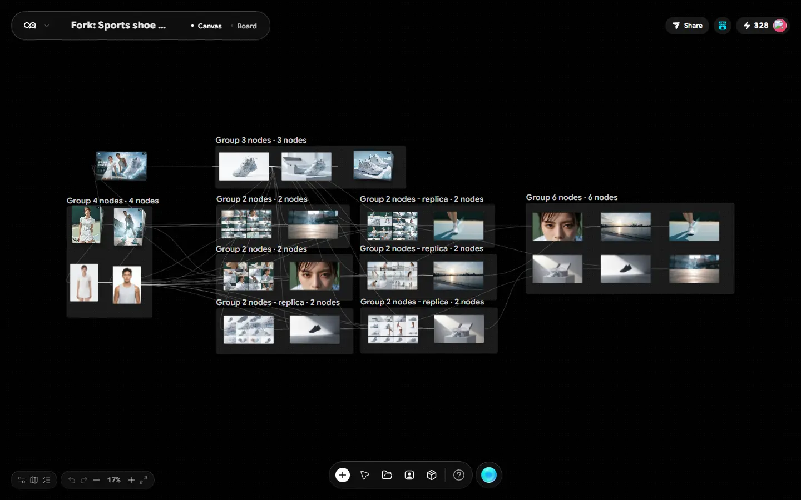
01 / 10Video · ImageTVC & quảng cáo
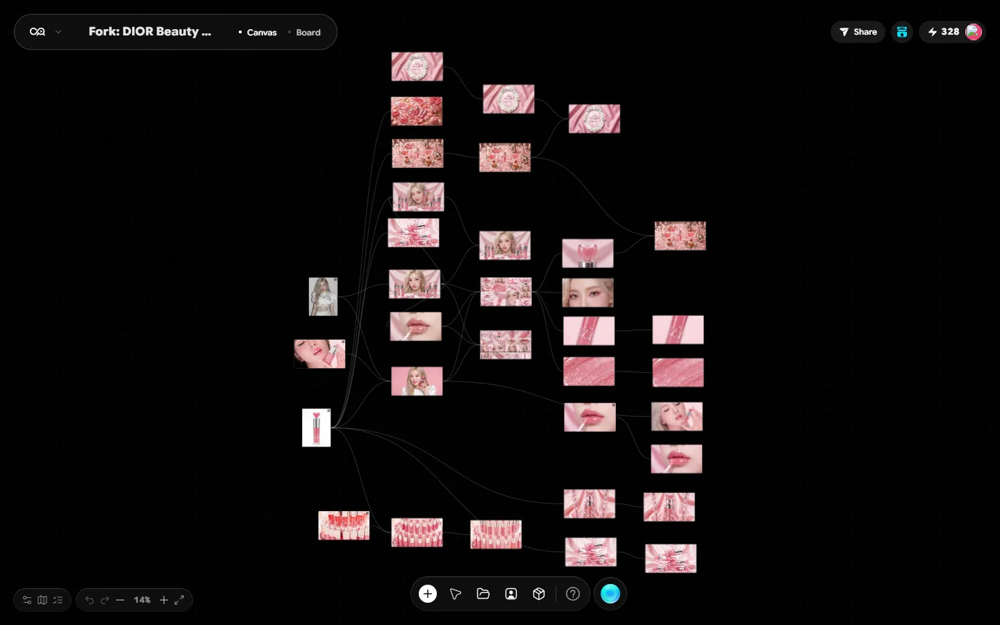
02 / 10Image · VideoBeauty advertising
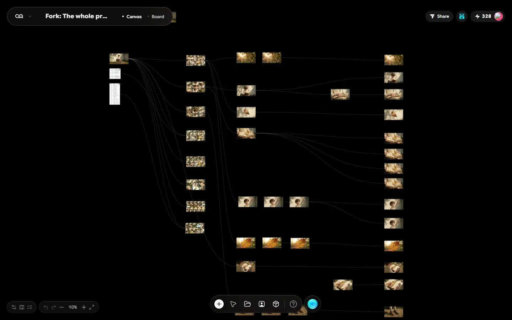
03 / 103D · VideoHoạt hình 3D
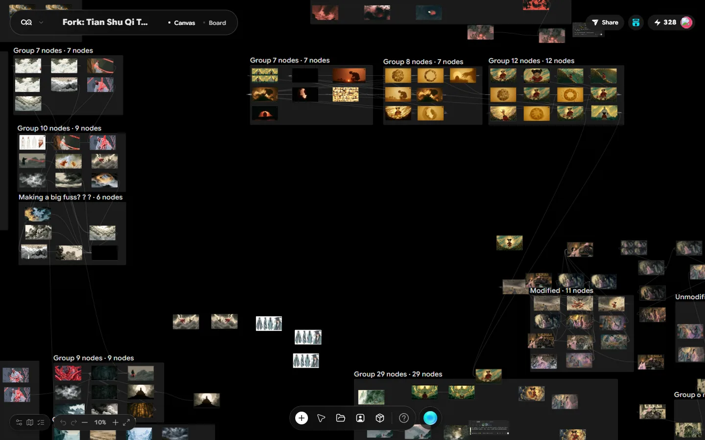
04 / 10Audio · VideoMusic video
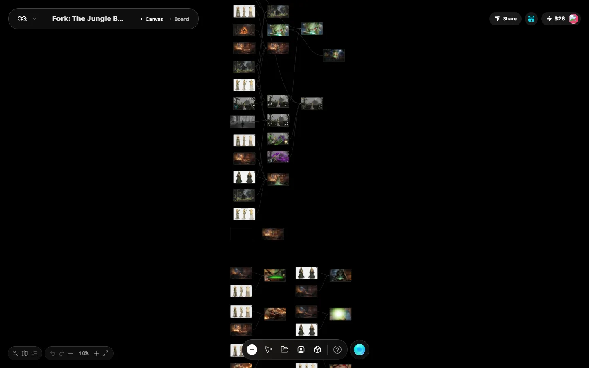
05 / 103D · FilmPhim & hoạt hình
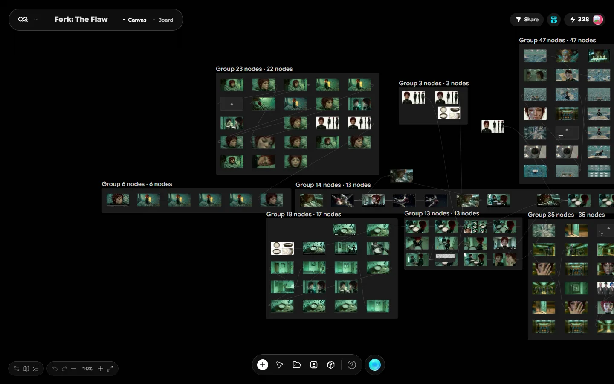
06 / 10Storyboard · FilmCinematic workflow
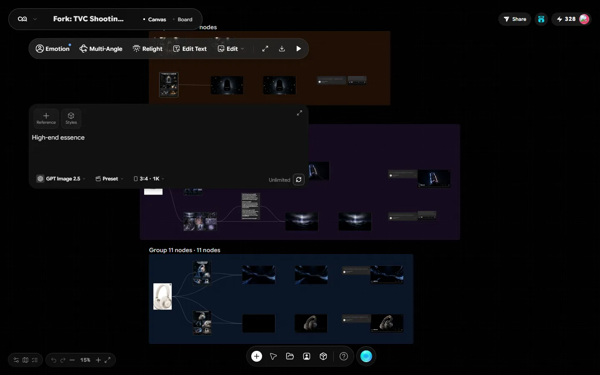
07 / 10Storyboard · TVCTiền kỳ & kỹ thuật
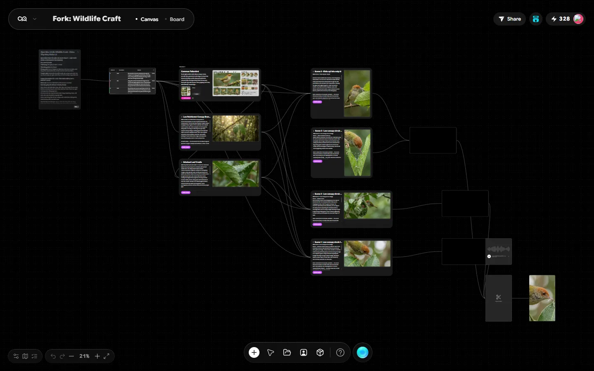
08 / 10Image · VideoWildlife content
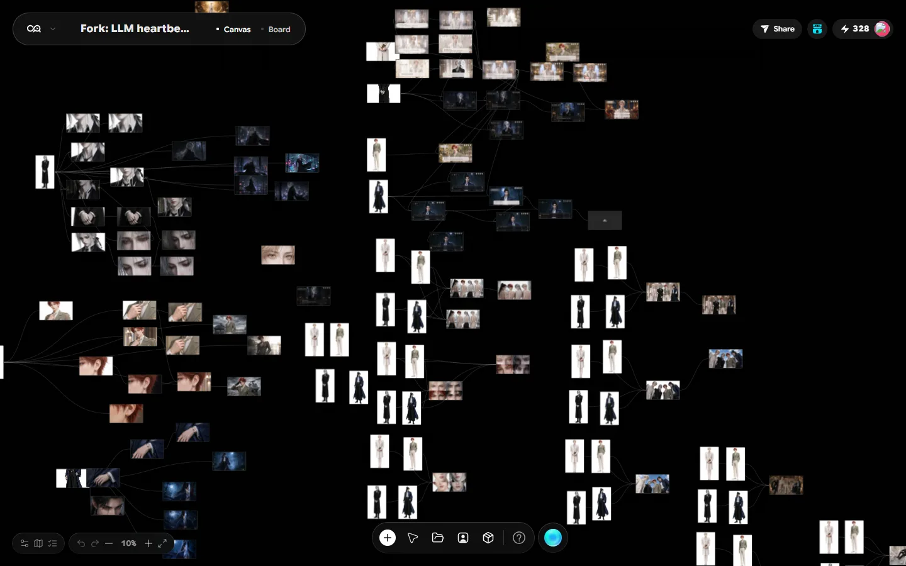
09 / 10Automation · LLMAI automation
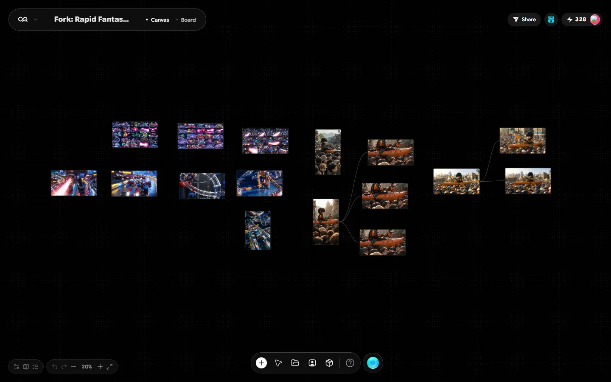
10 / 103D · VideoFantasy & animation
Ảnh canvas được chụp trực tiếp sau khi mở Preview và fork từng Workflow trên CinAI. Chọn một mẫu để xem template công khai tương ứng.
3D Director · CinAI Canvas
Dựng không gian, đặt nhân vật, camera và ánh sáng trực tiếp trên Canvas. Đội ngũ có thể thử bố cục như một phim trường ảo trước khi tạo hình hoặc chuyển động.
Ảnh bên dưới được chụp trực tiếp từ project mới trên CinAI Canvas sau khi mở node Director’s Desk.
Mở CinAI Canvas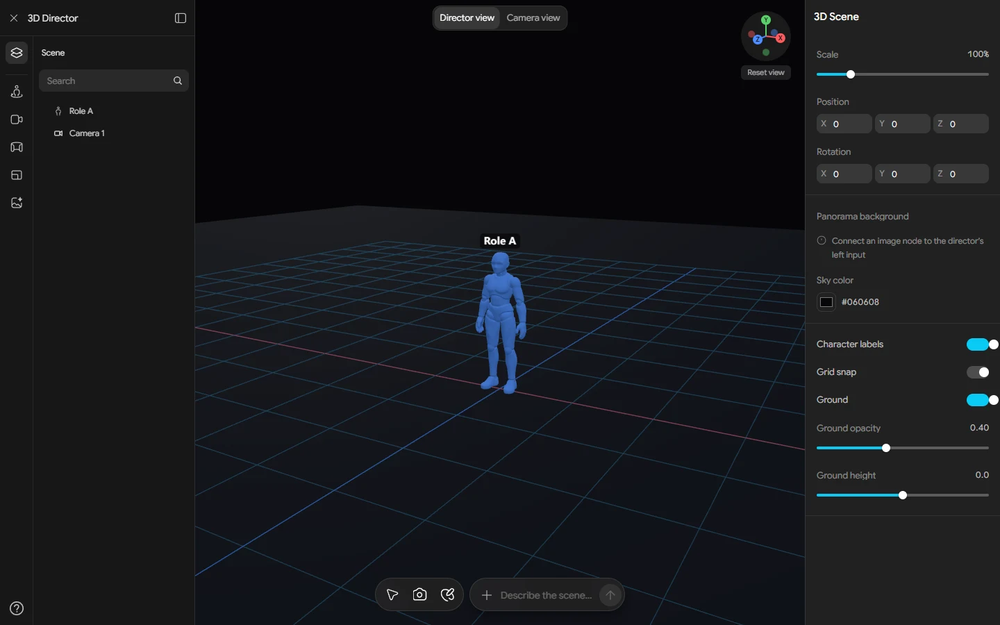
Giao diện thật · 3D DirectorCinAI Creative OS · một canvas
Agent, image, video, audio, 3D và storyboard cùng nằm trong một project. Đội ngũ chọn model theo nhiệm vụ, nối đầu ra thành Workflow và giữ toàn bộ ngữ cảnh dự án mà không phải mở chồng nhiều tab.
Mở CinAI Canvas 01 · Video models
01 · Video models 02 · Image models
02 · Image models 03 · Audio models
03 · Audio modelsKhông chỉ gom công cụ
Nhìn thấy bước nào đang chờ input, bước nào cần review và đầu ra nào được dùng tiếp.
Hình, video, audio và scene nằm cạnh logic đã tạo ra chúng.
Chọn nhiều model phổ biến cho từng task mà không phải dựng lại toàn bộ luồng.
Lưu cấu trúc để người khác hiểu, chạy lại và cải tiến theo cùng tiêu chí.
Từ đầu việc thật đến đầu ra thật
Bạn cho biết đầu việc đang vướng; buổi Zoom dùng chính chuỗi sản xuất đó để minh họa cách chọn Skill, model và Workflow phù hợp.
Xác định đối tượng, thông điệp, format, kênh phát và điều gì được xem là “đạt”.
Moodboard, ngôn ngữ hình ảnh, nhân vật, bối cảnh và nguyên tắc giữ tính nhất quán.
Chia cảnh, nhịp kể, camera, lời thoại và checkpoint trước khi tốn tín dụng render.
Mẫu prompt, cấu trúc thư mục, cách đặt phiên bản và tiêu chí chọn đầu ra cho từng bước.
Nhịp dựng, voice, nhạc, subtitle, logo, CTA và checklist xuất bản theo từng kênh.
Đóng gói các bước, đầu vào và checkpoint để người khác có thể tiếp tục triển khai mà không bắt đầu lại từ đầu.
Đăng ký trong 4 bước
Kết quả: thông tin đủ để chuẩn bị cuộc trao đổi.
Kết quả: lịch Zoom và nội dung dự kiến.
Kết quả: biết nên bắt đầu từ Skill nào và bước nào có thể đưa vào quy trình hiện tại.
Kết quả: một bước tiếp theo rõ ràng, không bị ép mua dịch vụ.
Chọn đúng trước khi đăng ký
Dành cho giảng viên & đơn vị đào tạo
Dùng CinAI như một phòng lab thống nhất: demo thành phẩm, mở Workflow, giao bài bằng Skill và để học viên tiếp tục phát triển project trên chính môi trường đã học.
Đăng ký đối tác giảng viênCho học viên xem đầu ra rồi mở node, model và từng bước tạo sản phẩm ngay trên CinAI Canvas.
Dùng Skill và Workflow mẫu để học viên thực hành, thay vì mất phần lớn buổi học để ghép nhiều công cụ.
Người học có thể mở lại project, fork Workflow và phát triển bài tập trên cùng nền tảng đã được hướng dẫn.
Hỏi nhanh, đáp thẳng
Phạm vi miễn phí, cách chuẩn bị và chương trình giảng viên/AFF được nói rõ trước khi bạn để lại thông tin.
admin@cinai.tvDành cho đội marketing, content, media và doanh nghiệp muốn xem cách CinAI hỗ trợ quy trình sản xuất nội dung bằng AI trước khi quyết định sử dụng.
Không bắt buộc. Buổi Zoom giới thiệu cách tiếp cận bằng Canvas, Skill và Workflow; nội dung trao đổi được điều chỉnh theo nhu cầu đã xác nhận.
Buổi giới thiệu và hướng dẫn được tổ chức trực tuyến qua Zoom. Lịch, thời lượng, số người tham gia và trọng tâm nội dung được TrúcAI xác nhận sau khi nhận thông tin đăng ký.
Phần miễn phí tập trung vào giới thiệu nền tảng, demo quy trình và hướng dẫn cách bắt đầu. Tùy chỉnh Workflow chuyên sâu, triển khai riêng hoặc đào tạo onsite — nếu có — là phạm vi khác và chỉ thực hiện sau khi hai bên thống nhất.
Tutorial thường đi theo một công cụ hoặc một thao tác. Buổi Zoom bắt đầu từ đầu việc của đội ngũ, cho xem đầu ra rồi mở Skill, model và Workflow liên quan để bạn hiểu cách nối thành một quy trình có thể chạy lại.
Có. CinAI có Canvas, Skill và Workflow mẫu cho video, image, audio, storyboard và 3D, phù hợp để demo và tổ chức bài thực hành trên một môi trường thống nhất.
Hoa hồng áp dụng cho khách hàng do đối tác giới thiệu và đáp ứng điều kiện chương trình. Gói áp dụng, cách ghi nhận, thời gian 12 tháng, chu kỳ thanh toán, hoàn tiền và các ngoại lệ được xác nhận trong thỏa thuận đối tác trước khi bắt đầu.
Không. Đây là tác phẩm được chọn từ CinAI Canvas để chứng minh dải năng lực sáng tạo của hệ sinh thái. Chúng không phải cam kết rằng mọi học viên sẽ tạo ra kết quả giống hệt.
Tên, ảnh, danh mục, lượt dùng và video preview được đối chiếu từ endpoint công khai của CinAI ngày 07/10/2026. CinAI có kho hơn 1.000 Skill công khai; 50 Skill trên trang đều có video preview hoạt động tại thời điểm kiểm tra.
Bắt đầu từ đầu việc của bạn
Cho TrúcAI biết đội ngũ đang muốn làm TVC, content bán hàng, phim ngắn hay xây lớp học AI. Thông tin được dùng để chuẩn bị đúng Workflow và ví dụ cần xem.